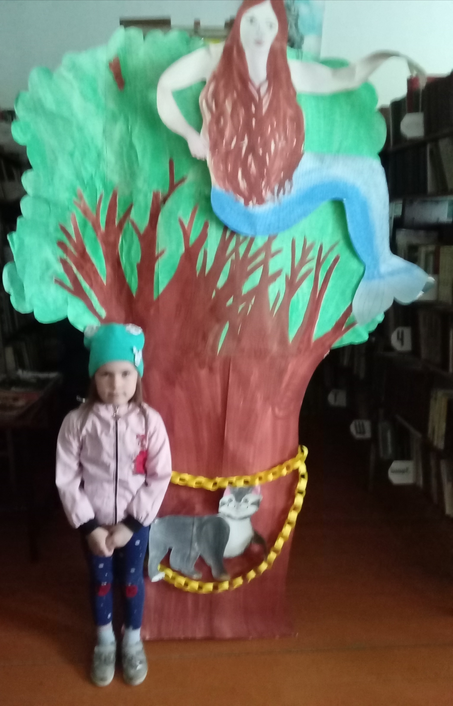
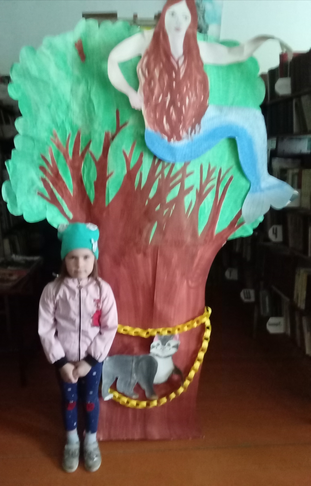
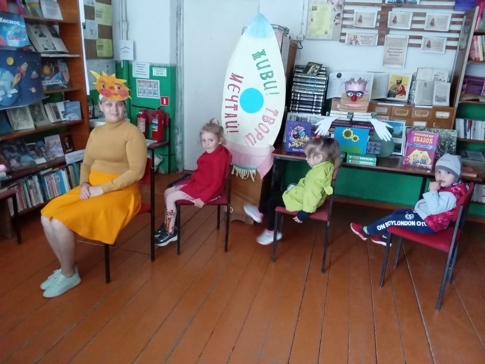

Новости
вторник, 15 июня 2021 год
Сегодня в Краснопольской библиотеке прошло занятие кружка «Библионик»: экологический час «Мы друзья твои, природа!», на котором присутствовали детсадовцы и воспитательница Новицкая Любовь Викторовна.
На Земле проживает много разных животных. Мультфильм «Животные разных стран» показал, что разные страны богаты различными животными: много панд в Китае, тигров в Индии, обезьян в Японии, орлов в Америке, кенгуру в Австралии и с ними коалы — много друзей у нас!
Самое любимое домашнее животное у детей — это собака. Ребята посмотрели весёлый клип «Раз собака, два собака» о собаках-шалунишках. А развивающий мультик «Как говорят животные» представил нарисованное говорящее животное, а потом настоящее.
Две физкультминутки «Избушка на курьих ножках» и «Раз грибок, два грибок» продолжились прогулкой по улице Школьной. На нашем пути мы видели красивые цветы, много деревьев, кота без хвоста, собачку у калитки одного из домов. Сидели на лавочке. На обратном пути прямо над нашими головами пролетела стая кричащих птиц.
среда, 9 июня 2021 год
Сегодня детсадовцы и воспитательница Перескокова Александра Николаевна пришли на занятие кружка «Библионик» под названием «В волшебной пушкинской стране», ведь 6 июня 222 года назад в Москве родился будущий поэт Александр Пушкин.
Началось занятие с беседы «Из жизни маленького Саши» и просмотра слайд-шоу «Пушкин и Россия». Также дети полюбовались рисунками с выставки «Путешествие по сказкам Пушкина».
Прикольный мультфильм «У Лукоморья» сделан по началу поэмы Пушкина «Руслан и Людмила». После его просмотра дети называли, каких жителей Лукоморья нет на фотозоне в нашей библиотеке.
Затем ребята складывали пазлы «Сказки Пушкина». Самая первая справилась с задачей Злата Толмачёва. Физкультминутка «Ветер по морю гуляет и кораблик подгоняет» немного взбодрила ребят, а фотосессия у фотозоны их развеселила.
 

На прощание все получили от библиотекаря по пакету сока. Вот и занятию конец, а кто слушал — молодец.
вторник, 8 июня 2021 год
Сегодня детсадовцы с воспитательницей Новицкой Любовью Викторовной пришли на занятие кружка «Библионик», посвящённое Дню рождения Пушкина.
Литературный час «Чудеса в Лукоморье и в сказках Пушкина» начался с краткой биографии писателя. Дети посмотрели рисунки с выставки «Путешествие по сказкам Пушкина» из архива библиотеки. Мультфильм «У Лукоморья» показал героев этого сказочного места, придуманного Пушкиным. А фотозона «Чудеса Лукоморья» дала желающим детям возможность сфотографироваться рядом с учёным котом, Бабой Ягой, Змеем Горынычем, Лешим, Кощеем Бессмертным.


В подарок дети получили по пакетику сока.
среда, 2 июня 2021 год
Сегодня занятие кружка «Библионик» в Краснопольской библиотеке посвящалось прошедшему празднику всех детей Земли.
Соревновались две команды: прыгали, делали красивую причёску, угадывали, что едят разные животные, как зовут детей и героев разных сказок, перетягивали за черту другую команду, носили воду в ложке, стараясь больше наполнить свою кружку, нашли на стуле сумку с соком для всех участников.

Победившая команда получила наклейки «Смешарики» и в подарок от родителей — сказки и рассказы с красивыми иллюстрациями.
среда, 2 июня 2021 год
Сегодня Краснопольские ребята сходили в поход вместе с Суходоевой Анастасией Николаевной и Фалалеевой Еленой Евгеньевной. Солнце, ветер, свежий воздух. У нас были лидеры, середняки и замыкающие. И приятная усталость.
Деревня Жабриевская мне понравилась из-за уюта и доброжелательных жителей, которые встречались на пути. Особая благодарность водителю автобуса Большевика за его доброту!

вторник, 1 июня 2021 год
1 июня — первый день лета и День защиты детей. На занятии кружка «Библионик» было всего трое ребят.
Час хорошего настроения «Детство — это радость» начался со стихов об этом замечательном празднике. Библиотекарь познакомила ребят с книгами с выставки «Дети в сказках и стихах».
Лето — это цветы, красивые деревья и много бабочек, птиц и кузнечиков. А могут ли дети прыгать, как кузнечики? Легко!
Ещё лето — жёлтое солнышко, жёлтые ромашки, бабочки, лютики, подсолнухи. После «жёлтой» игры, сидя на стульях, мы в игровой форме отправились в путешествие на «паровозике тюх-тюх», а потом и на разноцветных тракторах.
А ещё мы подклеили к зелёным листьям и стебельку бутон тюльпана.
В конце малыши получили в подарок от родителей по интересной детской книжке, а от библиотекаря по коробочке сока. Спасибо Коробке добра! Жаль, что другие ребята не пришли на занятие из-за болезни. Желаю всем детям быть здоровыми, весёлыми и счастливыми!